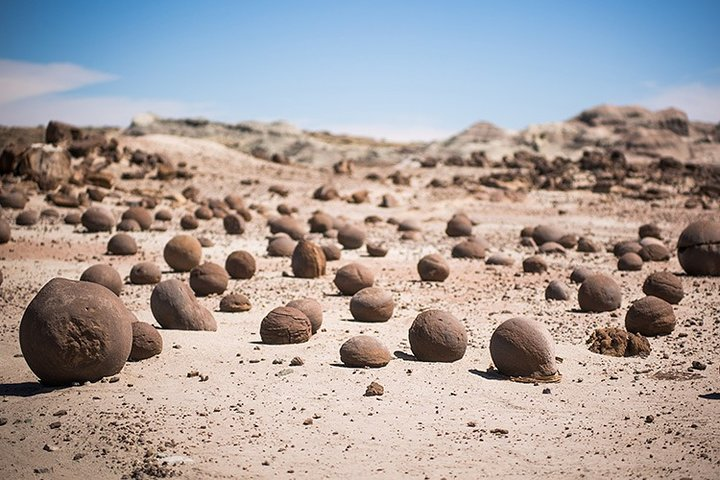

Vení a conocer cuatro de las provincias mas hermosas de nuestro país
Todas las opciones para disfrutar como mas te guste. Te invitamos a disfrutar de sus paisajes, turismo aventura, culturas, gastronomía, historia
Experimenta Argentina
Provincias que no te podes perder...


Los Mejores Lugares para vos...

Valle De La Luna
Valle De La Luna
Popularmente conocido como “Valle de la Luna”, este fascinantemente extraño lugar del mundo ocupa unas 62 mil hectáreas y es, junto a su vecino Parque Nacional Talampaya, en la provincia de La Rioja, Patrimonio de la Humanidad.

Parque Provincial Ischigualasto
Parque Provincial Ischigualasto
El Parque Natural Provincial Ischigualasto se encuentra emplazado en el nordeste de la provincia de San Juan, a 330 km de la ciudad capital y a 75 km de la localidad de San Agustín del Valle Fértil.

Dique Punta Negra
Dique Punta Negra
A solo 35 km de San Juan por un camino muy pintoresco bordeado de viñedos, se encuentra esta represa, orgullo de la ingeniería. Permite el abastecimiento de agua junto al Dique de Ullum para toda la ciudad.

Ruta De Los Vinos
Ruta De Los Vinos
Un recorrido enoturístico incomparable, producto de una encantadora unión de vitivinicultura destacada y paisajes inigualables.
Asado Argentino
Asado Argentino
Es el plato típico argentino por excelencia y una de las delicias del país. Consiste en diferentes piezas de carne que, como su propio nombre indica, se asan a la brasa.El tipo de carne que se suele consumir es la de vaca, cordero o el cabrito.
Empanadas Argentinas
Empanadas Argentinas
De herencia española, este plato cuenta con numerosas variedades dependiendo de la región donde uno se encuentre. Una de las más populares es la de carne, que suele ir aderezada con cebolla, huevo duro y aceitunas. Son las llamadas tucumanas y a veces también pueden contener pasa de uva.

Vinos Argentinos
Vinos Argentinos
Nuestra vitivinicultura cuenta con más de cinco siglos de historia, integrando los saberes de los pueblos originarios con la tradición de los inmigrantes europeos, y representa la industria del sector más importante de América del Sur.
Choripan Argentino
Choripan Argentino
Este plato típico de Argentina consiste en un chorizo criollo o parrillero asado e introducido entre dos trozos de pan. De textura blanda, generalmente está compuesto de carne vacuna y un 30% de cerdo.

Corrientes Capital
Corrientes Capital
Abrazada por el río Paraná, la ciudad de Corrientes conserva un estilo arquitectónico sin igual, que atesora reliquias de amplio valor histórico, religioso y cultural

Reserva Natural Ibera
Reserva Provincial Ibera
El Parque Iberá o “Agua Brillante” en guaraní, es un lugar de ensueños ubicado en el corazón de la Provincia. Los antiguos cauces del Río Paraná forman una compleja red de humedales, bañados, esteros, lagunas, embalsados y cursos de origen pluvial.

Barrancas De Empedrado
Barrancas De Empedrado
Las emblemáticas barrancas de empedrado son el escenario de visita obligatoria por Corrientes, ya que por su particular geografía ribereña, presenta una gama de colores en los diferentes estratos y texturas, dignos de ver y fotografiar.
Paso De La Patria
Paso De La Patria
Es uno de los principales destinos turísticos del nordeste argentino. Abrazada por el imponente Río Paraná y custodiada por el gran pez dorado o “pirayú” esconde un sin fin de bellezas naturales aguardando a ser descubiertas por quienes la visiten.

Ciclismo
Ciclismo
Argentina ofrece grandes atractivos para disfrutar de la bicicleta. Solo se necesita un estado físico aceptable, paciencia y muchas ganas de disfrutar de los paisajes en silencio y despacio. Disponemos de rutas para todos los niveles de dificultad. Buenas bicis, repuestos, ropa, agua y comida, y… ¡a disfrutar!

Treeking y Senderismo
Treeking y Senderismo
Sentí la naturaleza bajo tus pies explorando la gran red de senderos que ofrece Argentina. Gracias a la infinidad de ambientes y geografías con que cuenta Argentina para vivenciar esta actividad, recargar energías y retornar renovados.

Naturaleza
Naturaleza
Ballenas, carpinchos, guanacos, orcas y mucho más. ¡En Argentina se vive una fauna increíble!. La variada geografía argentina y la existencia en ella de los más diferentes climas, hacen de este territorio el edén del avistaje de especimenes autóctonos.

Parque Provincial Aconcagua
Parque Provincial Aconcagua
El Parque Provincial Aconcagua es un área protegida en los Andes argentinos, en la frontera con Chile. Allí se encuentra el monte Aconcagua, cuya cima está cubierta de nieve y que es uno de los más altos de Sudamérica.